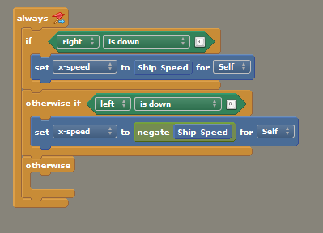
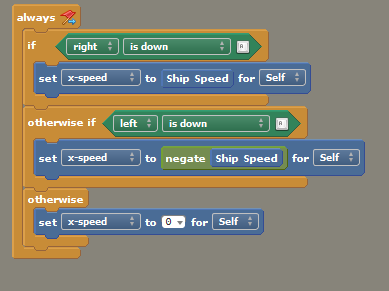

Part 8: Making the Ship Move
We've added an Event to the scene to play our music, now let's add an Event to our player's Ship so they can move it around!
Step 48: Click on the Dashboard tab, then on Actor Types, and select our Ship Actor Type. Now that we’re in the Actor Editor and can edit our Ship, click the Events tab.

Step 49: What we are looking at is Design Mode again, this time for the Ship. We’re going to create an Event that will allow us to move our Ship both left and right in the scene by pressing keyboard keys. To do this, we need to specify what happens when the player presses certain keyboard keys AND what happens when the player isn’t pressing anything.
To start, click the + Add Event button in the Events pane on the left, select Basics, and then choose When Updating from the three options shown.

The following block will appear in the work area:

Step 50: This time, rather than dragging a block over from the Palette, we’re going to use the Block Picker. Right-click anywhere in the workspace area, mouse over the Place a Block option, then over the Flow category, then click on the if block. That block will appear in the work area where you first right-clicked.

Step 51: We drag the if block into the Always block so it snaps in place.

Step 52: Now we need to select the right block to go inside the hexagonal field in our If block. Click the empty hexagonal field (this shape is always for a boolean, i.e. a value that can be true or false) in the block and a new dialog will pop up. Mouse over the User Input category, and then choose the Control is Down block.

The Control is Down block will appear for us in the If block, as shown below.

Step 53: The Always block will constantly run through all the logic inside of it while the game runs. Putting an if block inside an always block lets us turn on or off some action, so it runs constantly if a certain condition is met.
Click the Control dropdown on the block and select Choose Control, then pick right from the list.


Again, the block will change to reflect this choice.

Step 54: Next, we need to go to the Actor category of the palette and select the Motion sub-category and find the Set X Speed to [0] for Self block, as shown below.

This block will allow us to control the ship's speed. Drag it over to the work area, and snap it inside the if block's empty space so it looks like the image below.

Step 55: We now need to create an Attribute that we can use to adjust the value for x-speed. By doing this we won’t need to edit the speed value directly on the block in our Event every time we want to tweak it. To do this, let's click the Attributes category on the Palette, then click the Create an Attribute button.

In the dialog that appears, we will give our new attribute a Name of "Ship Speed" and set the Type to "Number". Click OK to continue.

Now you’ve got a blue block for the Ship Speed Attribute that you can set to different numeric values. We’ll show you how to set its value later when we complete this Event.

Step 56: Click on the empty number field in the set x-speed to [ ] for [Self] block, select Attributes in the pop-up dialog, and choose the one we just created, Ship Speed.

As you would expect, the block will appear in the field.

Step 57: Next, go to the Flow category, Conditions sub-category in the Palette and drag the otherwise if block over to the work area.

Snap the otherwise if block under the if block inside the Always Event block, as shown.

Step 58: Now we need to set up what happens when the user presses the left key instead of the right key. Get another Control is Down block and set it to left. We now need another "set x-speed to [Ship Speed] for [Self]" block.
Tip: To easily duplicate a block, hold down ALT and click-and-drag the block you want to duplicate. If there are other blocks nested inside of the one you drag, they will be duplicated as well. You can use this to quickly copy a whole stack of blocks!
Once we have our second x-speed block with the Ship Speed inside of it, we need to make a slight change to have the Ship move left. Because positive speed values move an actor to the right, we have to use a negative value to make the actor move left instead.
To do this, insert a negate block (it's in the Numbers & Text category, Math sub-category) to the field where Ship Speed would go, then replace Ship Speed inside the negate block. This block will take the number inside of it and make it a negative; thus making our Ship Speed work for moving left without needing a second number.

Step 59: If we were to set Ship Speed to a value and test now, we could press left and right to make our ship move in those directions at the desired speed. However, we'd quickly notice an issue; it won't stop moving!
This is because our logic sets the X-speed to a value, but never resets it to 0 when a key is not being pressed. To fix this, we need to add one more conditional block. Find and insert an otherwise block below the otherwise if block shown previously.

Step 60: Grab the set x-speed to [ ] for [Self] block again, click the [x-speed] dropdown on the block, and set the value in the field to 0. Then snap it in place. Here's the complete Event.

Step 61: The last thing we need to do is set the Ship Speed value. Click on the Attributes tab at the bottom of the entire Palette.

Then set the Ship Speed Attribute’s Default Value to 20.

Step 62: Test the game to make sure the Ship moves from left to right and stops when you let go of a key.